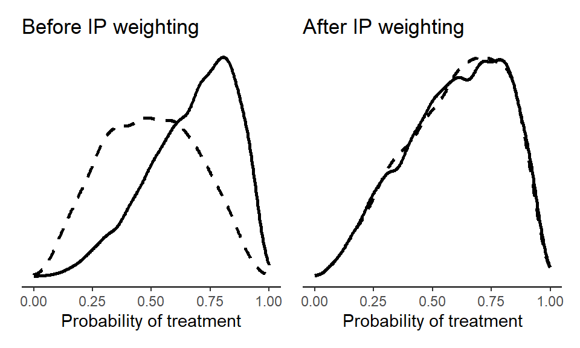
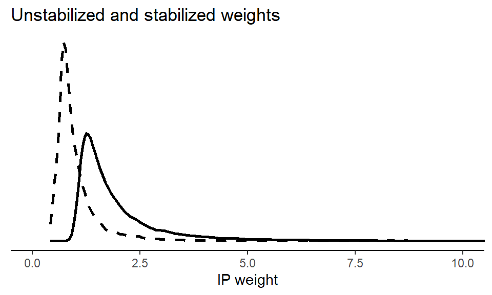

Chapter 3 G-methods and Marginal Effects
3.1 Inverse probability weighting
For our illustration of IPW and g-computation, we simulate some simple confounded data.
set.seed(1747)
n <- 1e4
bZ <- 2
bX <- 2
Z <- rnorm(n, 0, 0.5)
X <- rbinom(n, 1, plogis(0.5 + Z*bZ))
Y <- rnorm(n, 10 + X*bX + Z*bZ)
d <- data.frame(Y=Y, X=X, Z=Z)For IPW, we first fit a logistic regression model of the probability of receiving treatment.
We then predict for each individual their probability of receiving treatment.
Lastly, we inverse those probabilities and use them as weights in a model – a so-called ‘marginal structural model’ – that regresses Y on X.
We then compare the treatment (solid lines) and control (dashed lines) groups before (i.e., in the observed sample) and after weighting (i.e., the IPW ‘pseudo-population’).
# IPW with unstabilized weights
library(ggplot2)
library(patchwork)
p1 <- ggplot() +
# X = 1 (sample)
geom_density(data = subset(d, X == 1),
aes(x = pX), size = 1) +
# X = 0 (sample)
geom_density(data = subset(d, X == 0),
aes(x = pX), linetype = "dashed", size = 1) +
theme_classic() +
theme(
axis.text.y = element_blank(),
axis.ticks.y = element_blank(),
axis.title.y = element_blank(),
axis.line.y = element_blank()) +
xlim(c(0,1)) + xlab("Probability of treatment") +
ggtitle("Before IP weighting")
p2 <- ggplot() +
# X = 1 (pseudo-population)
geom_density(data = subset(d, X == 1),
aes(x = pX, weight = w), size = 1) +
# X = 0 (pseudo-population)
geom_density(data = subset(d, X == 0),
aes(x = pX, weight = w), linetype = "dashed", size = 1) +
theme_classic() +
theme(
axis.text.y = element_blank(),
axis.ticks.y = element_blank(),
axis.title.y = element_blank(),
axis.line.y = element_blank()) +
xlim(c(0,1)) + xlab("Probability of treatment") +
ggtitle("After IP weighting")
(p1 + p2)
The above approach showcases IPW with so-called ‘unstabilized’ weights. But stabilizing the IP weights are often recommended. Stabilized weights uses an unconditional model for the treatment probability instead of 1 as the numerator in the IPW formula. Let’s visualize this wit the stabilized weights plotted with a dashed curve. We see that the stabilized weights are much less extreme.
# IPW with stabilized weights
pn <- glm(X ~ 1, data = d)
d$pnX <- predict(pn, type = "response")
d$sw <- with(d, ifelse(X==1, pnX/pX, (1-pnX)/(1-pX)))
p3 <- ggplot() +
geom_density(data = d,
aes(x = w), size = 1) +
geom_density(data = d,
aes(x = sw), linetype = "dashed", size = 1) +
theme_classic() +
theme_classic() +
theme(
axis.text.y = element_blank(),
axis.ticks.y = element_blank(),
axis.title.y = element_blank(),
axis.line.y = element_blank()) +
xlab("IP weight") +
coord_cartesian(xlim = c(0,10)) +
labs(title = "Unstabilized and stabilized weights")
p3
3.1.1 Bootstrapping
Here’s a basic bootstrapping approach for IPW. We use only 100 bootstrap samples, but in practice we’d often want (many) more.
# Load necessary libraries
library(boot)
# Number of bootstrap samples
n_bootstrap <- 100
# Function to perform the analysis on a bootstrapped sample
bootstrap_analysis <- function(data, indices) {
# Resample the data
d <- data[indices, ]
# Fit the treatment model using logistic regression
treatment_model <- glm(X ~ Z, data = d, family = "binomial")
# Calculate predicted probabilities
d$pX <- predict(treatment_model, type = "response")
# Calculate weights
d$w <- with(d, ifelse(X == 1, 1 / pX, 1 / (1 - pX)))
# Fit the weighted linear regression model
weighted_model <- lm(Y ~ X, data = d, weights = w)
# Return the coefficient of X
return(coef(weighted_model)["X"])
}
# Perform bootstrapping
bootstrap_results <- boot(data = d,
statistic = bootstrap_analysis,
R = n_bootstrap)
# Summarize the bootstrap results
bootstrap_summary <- boot.ci(bootstrap_results, type = "norm")
# Print the results
print(bootstrap_summary)## BOOTSTRAP CONFIDENCE INTERVAL CALCULATIONS
## Based on 100 bootstrap replicates
##
## CALL :
## boot.ci(boot.out = bootstrap_results, type = "norm")
##
## Intervals :
## Level Normal
## 95% ( 1.946, 2.057 )
## Calculations and Intervals on Original Scale3.2 G-computation
Here, we show the basic g-computation workflow…
model <- lm(Y ~ X + Z, data = d)
d$EX1 <- predict(model,
newdata = transform(d, X = 1))
d$EX0 <- predict(model,
newdata = transform(d, X = 0))
with(d, mean(EX1)-mean(EX0))… And code to produce the table showing both observed and predicted values, some of which are counter-factual.
## % latex table generated in R 4.4.0 by xtable 1.8-4 package
## % Fri Oct 18 23:55:45 2024
## \begin{table}[ht]
## \centering
## \begin{tabular}{rrrrrr}
## \hline
## & Y & X & Z & EX1 & EX0 \\
## \hline
## 1 & 15.3 & 1 & 0.6 & 13.2 & 11.2 \\
## 2 & 11.1 & 0 & 0.1 & 12.2 & 10.2 \\
## 3 & 10.6 & 1 & -0.1 & 11.7 & 9.7 \\
## 4 & 12.9 & 1 & 0.7 & 13.4 & 11.3 \\
## 5 & 11.0 & 1 & -0.5 & 10.9 & 8.9 \\
## 6 & 9.4 & 0 & 0.5 & 12.9 & 10.9 \\
## \hline
## \end{tabular}
## \end{table}3.2.1 Bootstrapping
Next, we show a basic bootstrapped g-computation implementation, again using only 100 bootstrap samples to ease the computational burden of the example.
# Number of bootstrap samples
n_bootstrap <- 100
# Define the function to perform the analysis on a bootstrapped sample
bootstrap_analysis <- function(data, indices) {
# Resample the data
d <- data[indices, ]
# Fit the linear regression model
model <- lm(Y ~ X + Z, data = d)
# Calculate predicted values for X = 1 and X = 0
d$EX1 <- predict(model, newdata = transform(d, X = 1))
d$EX0 <- predict(model, newdata = transform(d, X = 0))
# Compute the difference in means
ate <- with(d, mean(EX1) - mean(EX0))
return(ate)
}
# Perform bootstrapping
bootstrap_results <- boot(data = d,
statistic = bootstrap_analysis,
R = n_bootstrap)
# Summarize the bootstrap results
bootstrap_summary <- boot.ci(bootstrap_results, type = c("norm"))
# Print the results
print(bootstrap_summary)## BOOTSTRAP CONFIDENCE INTERVAL CALCULATIONS
## Based on 100 bootstrap replicates
##
## CALL :
## boot.ci(boot.out = bootstrap_results, type = c("norm"))
##
## Intervals :
## Level Normal
## 95% ( 1.962, 2.050 )
## Calculations and Intervals on Original Scale3.2.2 Bayesian g-computation
Lastly, we show a Bayesian g-computation workflow using the R packages brms (which requires RStan or Cmdstan) [REF] for model fitting and tidybayes for post-processing.
# Fit Bayesian regression
bmodel <- brm(Y ~ X + Z,
data = d,
cores = 4, seed = 1,
file = "fits/bmodel.rds")# Calculate predicted values for X = 1 and X = 0
bEX1 <- add_epred_draws(object = bmodel,
newdata = transform(d, X = 1))
bEX0 <- add_epred_draws(object = bmodel,
newdata = transform(d, X = 0))## Error: cannot allocate vector of size 152.6 MbThe key thing to note when working with Bayesian model fits is that we need to calculate our quantity of interest (here, the ATE) within each posterior draw.
# Compute the difference in means
ate <- data.frame(EX1 = bEX1$.epred,
EX0 = bEX0$.epred,
draw = bEX0$.draw) |>
# For each posterior draw...
group_by(draw) |>
# ... Calculate ATE
summarise(ate = mean(EX1 - EX0))## Error in eval(expr, envir, enclos): objekt 'bEX0' blev ikke fundetWe can summarize the posterior ATE by its mean and highest posterior density interval.
## Error in eval(expr, envir, enclos): objekt 'ate' blev ikke fundetAn alternative approach – when we have a fitted model, Bayesian or otherwise – is via the versatile and very well documented marginaleffects package.
##
## Term Contrast Estimate 2.5 % 97.5 %
## X mean(1) - mean(0) 2.01 1.96 2.05
##
## Columns: term, contrast, estimate, conf.low, conf.high, predicted_lo, predicted_hi, predicted, tmp_idx
## Type: response